“阿基米德向厄拉多塞（Eratosthenes）致意．
前些时候我寄给您一些我发现的定理，但当时我只写出了定理的内容，而没有给出证明，希望您做出证明．我寄给您的那些定理的内容如下．
1.如果在一底为平行四边形的直棱柱内作一内接圆柱，圆柱的两底位于两相对的平行四边形[1]上，圆柱的边［即四条母线］在直棱柱的其余平面（侧面）上．经过圆柱的底圆圆心和与该底圆相对的正方形的一边作一平面，该平面从圆柱上截下的部分由两个平面和圆柱的表面围成，其中一个平面为所作的平面，另一平面为圆柱底所在的平面，圆柱的表面指位于上述两平面之间的部分，那么，从圆柱上所截下部分的体积是整个棱柱的1/6.
2.如果在一立方体内作一内接圆柱，圆柱的两底位于两相对的平行四边形[2]上，圆柱面与立方体的其余四个平面（侧面）相切．同时还有另一圆柱内接于同一立方体，此圆柱的两底位于另外的平行四边形上，它的表面与余下的四个平面（侧面）相切，那么，位于两圆柱内部，由两（等直径）圆柱面（正交）所围成的图形[3]，其体积是整个立方体的2/3.
上述这两个定理性质上不同于以前转寄出的那些定理，这是由于，那时所谈及的图形，即劈锥曲面体和旋转椭圆体及它们的一部分，我们是用圆锥和圆柱来衡量其体积的：但并未发现其中任一个图形等于由平面所围成的立体图形的体积；而现在谈及的由两个平面和圆柱面围成的图形，却发现其体积等于由平面围成的某一立体图形的体积．关于前述两个定理的证明我已经写在这本书里，现在把它寄给您．另外，如我所说，您是一位极认真的学者，在哲学上有卓越成就，又热心于［探索数学知识］，因而，我认为在同一本书中给您写出并详细说明一种方法的独特之处是合适的，用这种方法使您可能会借助于力学方法开始来研究某些数学问题．我相信这一方法的相应过程甚至对定理本身的证明同样有用，因为按照上述方法对这些定理所做的研究虽然不能提供定理的实际证明，以后它们必须用几何学进行论证，但通过力学方法，我对一些问题首先变得清晰了．然而，当我们用这种方法预先获得有关这些问题的信息时，完成它们的证明当然要比没有任何信息的情况下去发现其证明容易得多．正是由于这一原因，对于圆锥是同底等高的圆柱体积的三分之一及棱锥是同底等高的棱柱体积的三分之一这两个定理来说，欧多克索斯首先给出它们的证明，但我们不能就此轻视德谟克利特的功绩，是他最先就上述图形[4]作出这种断言，虽然他没有予以证明．现在我本人就处于［通过上面指出的方法］先发现要公布的定理的情形，这使我认为有必要阐述一下这种方法．这样做部分是因为我曾谈到过此事[5]，我不希望被视作讲空话的人，另外也因为我相信这种方法对数学很有用．我认为，这种方法一旦被理解，将会被同代人或未来的某些人用以发现我尚未想到的其他一些定理．
那么，我先列出我用力学方法得到的第一个定理，即：
直角圆锥的截面［即抛物线］所构成的弓形面积是同底等高三角形的4/3，
这之后我将给出用同样的方法研究得到的所有其他定理．然后，在该书的最后部分我将给出［书的开始处所述命题］的几何［证明］……
［我假定下列命题成立，它们在后面将要用到．］
1.如果［两个重心不同的量相减，那么剩余量的重心可通过如下方法求得］，即［在整体量的重心方向上］延长［连接整体量和减量的重心的直线］，然后从其上截去一段长度，使该长度与上述两重心间的距离之比等于减量与剩余量的重量之比．
［《论平面图形的平衡》，i.8］
2.如果一组量的重心均在同一直线上，那么由这组量的全体所组成的量的重心将在相同的直线上．
［出处同上，i.5］
3.任一直线的重心是该直线的中点．
［出处同上，i.4］
4.三角形的重心是从角顶点到（对）边中点所作直线的交点．
［出处同上，i.13、14］
5.平行四边形的重心是对角线的交点．
［出处同上，i.10］
6.圆的重心就是［该圆的］圆心．
7.圆柱的重心是轴的平分点．
8.圆锥的重心是［划分轴的点，该点使轴上靠近顶点的］那部分［是靠近底的那部分的］三倍．
［这些命题都已经］证明过了[6]．［除这些命题外，我还要用到下面的命题，它是很容易证明的：
如果在两组量中，第一组量依次与第二组量成比例，而且［第一组］量的全体或其中一部分［与第三组量］成任一比，又第二组量与［第四组］中的相应量也成同一比，那么，第一组量之和与第三组所选量之和的比等于第二组量之和与第四组中（相应）所选量之和的比．［《论劈锥曲面体与旋转椭圆体》，命题1.］”
命题1 设ABC是由直线AC和抛物线ABC所围成的抛物线弓形，D为AC的中点．作直线DBE平行于抛物线的轴，连接AB、BC.
则弓形ABC的面积是三角形ABC面积的4/3.
由A点作AKF平行于DE，设抛物线在C点的切线交DBE于E，交AKF于F.延长CB交AF于K，再延长CK至H，使KH等于CK.
将CH作为杠杆，K为中点．
设MO是平行于ED的任一直线，它与CF、CK、AC分别交于点M、N、O，与曲线交于P点．
由于CE为抛物线的切线，CD为半纵坐标，所以
EB=BD，
“这在［圆锥曲线的］理论中已经证明过了[7]．”
又因为FA、MO都平行于ED，所以应有
FK=KA，MN=NO，
根据抛物线的性质，“已在引理中证明”，有
MO：OP=CA：AO ［参看《求抛物线弓形的面积》命题5］
=CK：KN ［Eucl.vi.2］
=HK：KN，
取直线TG等于OP，将其以H为重心放置，以使TH=HG，于是由N为直线MO的重心
及 MO：TG=HK：KN，
可推知，H处的TG和N处的MO关于K点保持平衡．
［《论平面图形的平衡》，i.6.7］
类似地，对平行于DE且与抛物线弧相交的所有其他直线，（1）截于FC、AC之间、中点在KC上的部分和（2）曲线和AC之间的截线为长、以H为重心放置的一段长度将关于K点保持平衡．
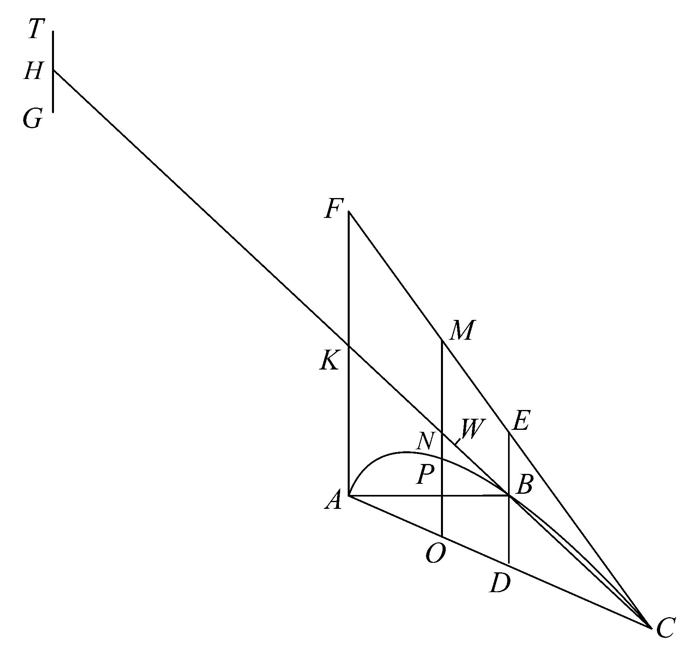
因此，K是由如下两组直线构成的整个系统的重心，即（1）截于FC、AC之间，置于图中实际所示位置的所有像MO一样的直线和（2）置于H处、以曲线和AC间的截线为长度的所有像PO一样的直线．
因为三角形CFA由所有像MO一样的平行线组成、弓形CBA由所有像PO一样含于曲线内部的直线组成，所以可推知，置于图中所示位置上的三角形与以H为重心放置的弓形CBA关于K点保持平衡．
以W点划分KC，使CK=3KW，则W是三角形ACF的重心，“这已在有关平衡性的著作中得到证明”
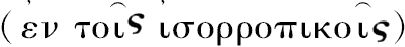
.［参看《论平面图形的平衡》ⅰ.15］
于是有△ACF：弓形ABC=HK：KW
=3：1.
从而 弓形ABC=
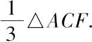
但 △ACF=4△ABC.
故 弓形ABC=
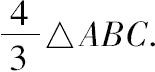
“这里所陈述的事实不能以上面所用的观点作为实际证明，但这种观点暗示了结论的正确性，鉴于该定理并未得到证明，同时它的真实性又值得怀疑，因此我们将求助于几何学的证明，我本人已经发现并公布了这一证明[8]．”
命题2 用同样的方法，我们可以考察命题
（1）球（就体积而言）是以它的大圆为底、它的半径为高的圆锥体积的4倍．
（2）以球的大圆为底、球直径为高的圆柱的体积是球体积的 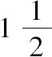
（1）设ABCD为球的大圆，AC、BD是相互垂直的直径．
在与AC垂直的平面上作以BD为直径的圆，再以该圆为底，以A为顶点作一圆锥，扩展这一圆锥的表面，然后用经过C点平行于该圆锥底的平面去截它，截面是以EF为直径的圆，以该圆为底，以AC为高和轴作一圆柱，并延长CA至H，使AH等于CA.
视CH为杠杆，A为其中点．
在圆ABCD所在的平面上作与BD平行的任一直线MN，设MN与圆ABCD交于点O、P，与直径AC交于点S，与直线AE、AF分别交于点Q、R.连接AO.
过MN作与AC成直角的平面，该平面截圆柱所得的截面是以MN为直径的圆，截球所得的截面是以OP为直径的圆，截圆锥得以QR为直径的圆．
因为MS=AC，QS=AS，则有
MS·SQ=CA·AS
=AO2
=OS2+SQ2.
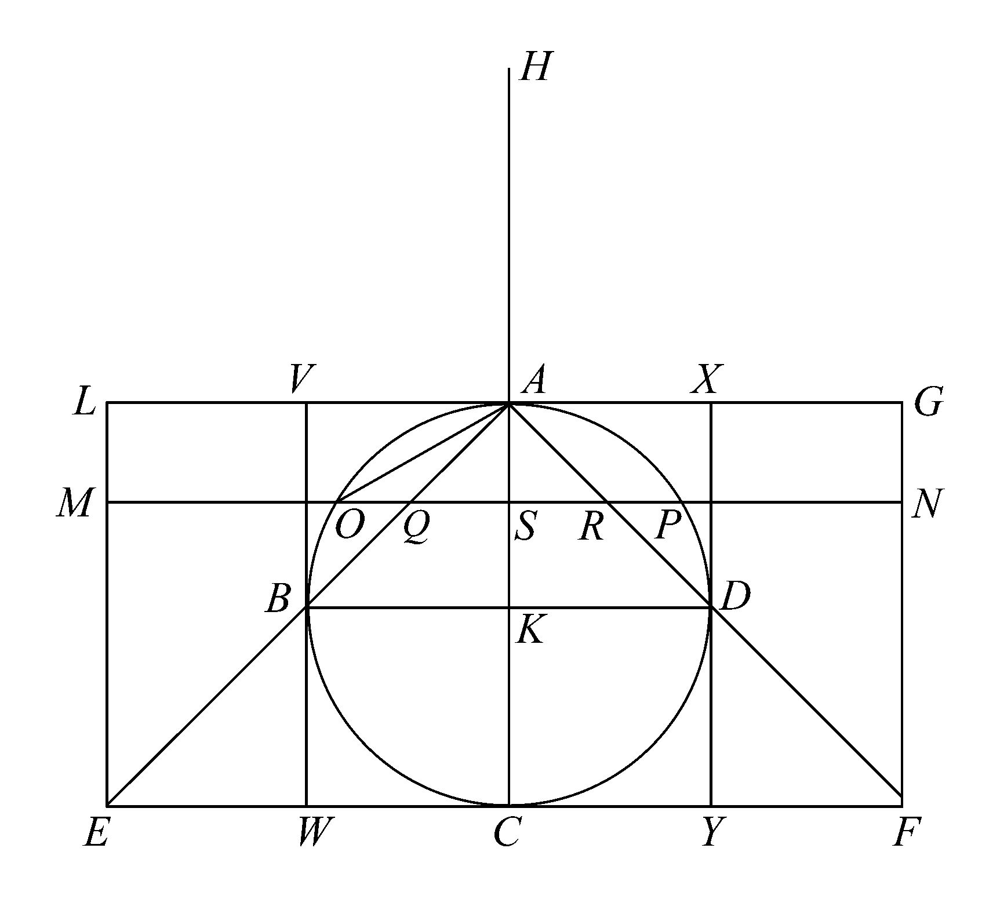
又 HA=AC，从而有
HA：AS=CA：AS
=MS：SQ
=MS2：MS·SQ
=MS2：（OS2+SQ2），这是上面推导出的结果，
=MN2：（OP2+QR2）
=以MN为直径的圆：（以OP为直径的圆+以QR为直径的圆）.
即
HA：AS=圆柱中的圆：（球中的圆+圆锥中的圆）.
因此，若以H为重心放置球中的圆和圆锥中的圆，那么，处于原位置上的圆柱中的圆与前两圆关于A点保持平衡．
同理，由这样的平面，即该平面垂直于AC并且经过平行四边形LF内平行于EF的任一其他直线，截得的三个相应的截面也有类似的结论．
如果我们以同样的方法讨论所有这三类圆，即垂直于AC的平面截圆柱、球和圆锥所得的圆，而且所有这三类圆分别组成上述三种立体图形，那么，可以得出，当球和圆锥以H为重心放置时，处于原位置上的圆柱将与二者关于A点保持平衡．
因而由K为圆柱的重心知有
HA：AK=圆柱：（球+圆锥AEF）.
但是 HA=2AK，
于是有
圆柱=2（球+圆锥AEF）.
而 圆柱=3圆锥AEF， ［Eucl.xii.10］
所以 圆锥 AEF=2球．
又由 EF=2BD知
圆锥 AEF=8圆锥ABD.
故 球=4圆锥ABD.
（2）过B、D作VBW、XDY平行于AC，设有一圆柱，以AC为轴，以VX、WY为直径的圆作两底．
则 圆柱VY=2圆柱VD
=6圆锥ABD ［Eucl.xii.10］
=
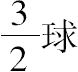
，这是由上面的（1）得到的．证完
“由这一定理，即球体积是以它的大圆为底、半径为高的圆锥体积的4倍，我想到，任一球的表面积是它的大圆面积的4倍，这是因为，由圆面积等于以它的周长为底，以它的半径为高的三角形面积这一事实进行推断，我认识到同样应有，球体积等于以球的表面积为底、半径为高的圆锥的体积，由此推断出球的表面积等于它的大圆面积的4倍[9]．”
命题3 用这种方法我们还能考察下面的定理．
以旋转椭圆体的大圆为底、轴为高的圆柱体积是旋转椭圆体的 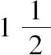
而且，当这一定理被证实时，显然有
如果旋转椭圆体被经过中心且垂直于轴的平面所截，则截得的半旋转椭圆体的体积是与该部分（即半旋转椭圆体）同底同轴的圆锥体积的2倍．
设经过旋转椭圆体的轴的平面与旋转椭圆体面相交的交线为椭圆ABCD，该椭圆的直径（即轴）为AC、BD，中心为K.
在与AC垂直的平面上作以BD为直径的圆，将以该圆为底，A为顶点的圆锥面扩展，所得锥面又被经过C点平行于该圆锥底的平面所截，截面是垂直于AC的平面上以EF为直径的圆．
设有一圆柱，以后面的圆为底，以AC为轴，延长CA至H，使AH等于CA.
将HC视为杠杆，A为其中点．
在平行四边形LF内作平行于EF的任一直线MN，与椭圆交于点O、P，与AE、AF、AC分别交于点Q、R、S.
现若经过MN作与AC垂直的平面，则该平面截圆柱、旋转椭圆体和圆锥所得的截面分别是以MN、OP、QR为直径的圆．
因为HA=AC，则
HA：AS=CA：AS
=EA：AQ
=MS：SQ.
从而 HA：AS=MS2：MS·SQ.
但由椭圆的性质有
AS·SC：SO2=AK2：KB2
=AS2：SQ2.
于是 SQ2：SO2=AS2：AS·SC
=SQ2：SQ·QM.
因而 SO2=SQ·QM.
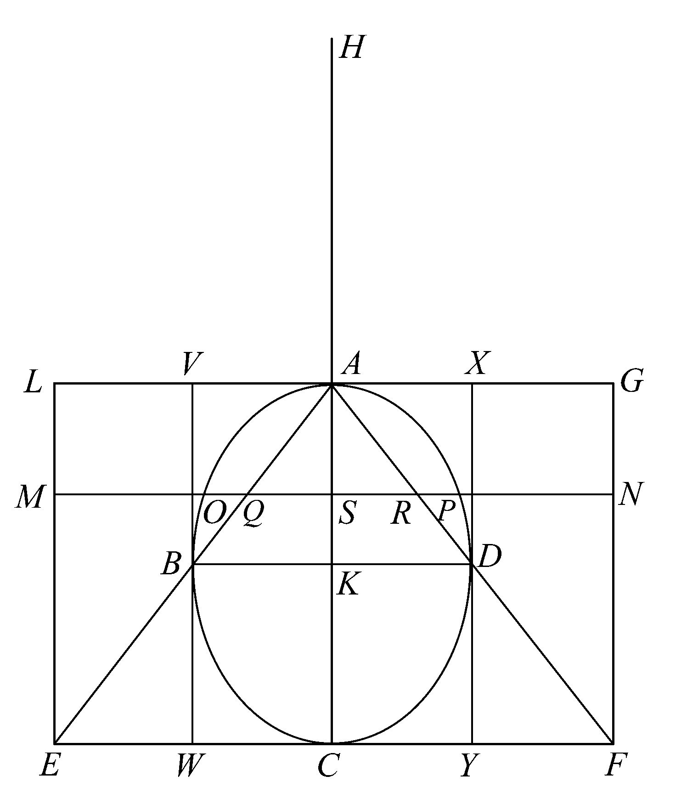
两边同时加上SQ2有
SO2+SQ2=SQ·SM.
所以，由上面推导的结果可得
HA：AS=MS2：（SO2+SQ2）
=MN2：（OP2+QR2）
=以MN为直径的圆：（以OP为直径的圆+以QR为直径的圆），
即
HA：AS=圆柱中的圆：旋转椭圆体中的圆+圆锥中的圆
因此，若以H为重心放置旋转椭圆体中的圆与圆锥中的圆，那么，处于原位置上的圆柱中的圆与前两圆关于A点保持平衡．
同理，由这样的平面，即该平面垂直于AC并且经过平行四边形LF内平行于EF的任一其他直线，截得的三个相应的截面也有类似的结论．
如果我们以同样的方法讨论所有这三类圆，即垂直于AC的平面截圆柱，旋转椭圆体和圆锥所得的圆，而且所有这三类圆分别组成上述三种图形，那么，可以得出，当旋转椭圆体和圆锥以H为重心放置时，处于原位置上的圆柱将与二者关于A点保持平衡．
因而由K为圆柱的重心知有
HA：AK=圆柱：（旋转椭圆体+圆锥AEF）.
但HA=2AK，
于是有 圆柱=2（旋转椭圆体+圆锥AEF）.
而 圆柱=3圆锥AEF， ［Eucl.xii.10］
所以 圆锥AEF=2旋转椭圆体．
又由EF=2BD知
圆锥AEF=8圆锥ABD，
故 旋转椭圆体=4圆锥ABD，
从而 半旋转椭圆体=2圆锥ABD.
过B、D作VBW、XDY平行于AC，设有一圆柱，以AC为轴，以VX、WY为直径的圆作两底．
则 圆柱VY=2圆柱VD
=6圆锥ABD
=
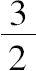
旋转椭圆体，这是由上面的结论得到的．证完
命题4 直角劈锥曲面（即旋转抛物体）被垂直于轴的平面所截取的部分的体积是与该部分立体同底同轴的圆锥体积的 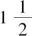
该命题能用我们所说的方法考察，过程如下．
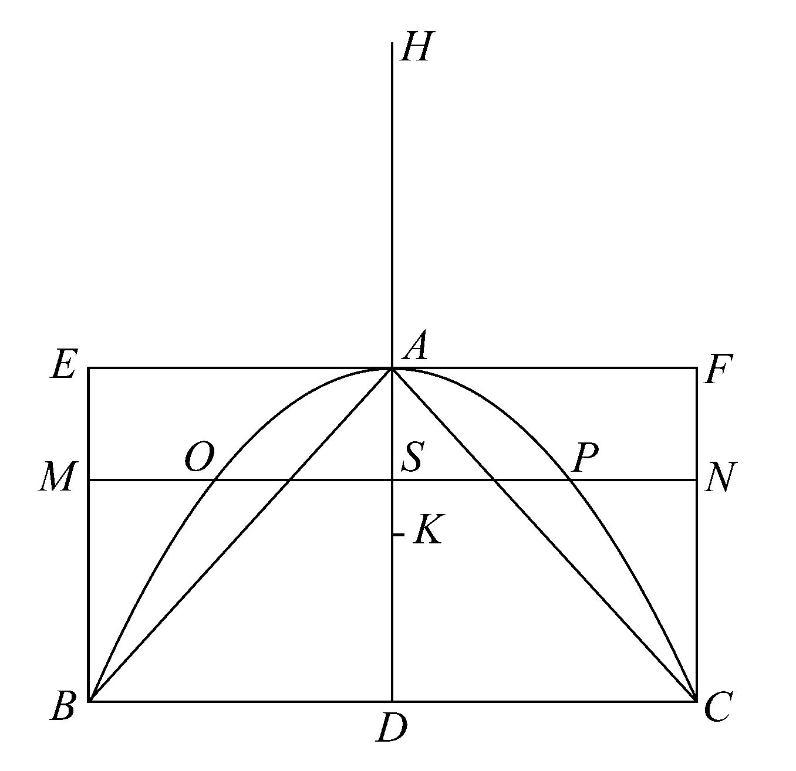
设旋转抛物体被经过轴的平面所截，截面为抛物线BAC，它又被另一垂直于轴的平面所截，该平面与前一平面的交线为BC，延长DA至H，即延长旋转抛物体被垂直于轴的平面所截取部分的轴，使HA等于AD.
视HD为杠杆，A为中点．
旋转抛物体被截取部分的底是与AD垂直的平面上以BC为直径的圆，又设有（1）以后面的圆为底、A为顶点的圆锥，（2）以同样的圆为底、AD为轴的圆柱．
在平行四边形EC内作平行于BC的任一直线MN，再作经过MN与AD垂直的平面，该平面截圆柱、旋转抛物体所得截面分别是以MN、OP为直径的圆．因为BAC为抛物线，BD、OS为平行于纵标方向的直线，则
DA：AS=BD2：OS2，
或 HA：AS=MS2：SO2．
从而
HA：AS=半径为MS的圆：半径为OS的圆
=圆柱中的圆：旋转抛物体中的圆．
因此，若以H为重心放置旋转抛物体中的圆，那么，处于原位置上的圆柱上的圆将与前者关于A点保持平衡．
同理，由这样的平面，即该平面垂直于AD并且经过平行四边形内平行于BC的任一其他直线，截得的两个相应的圆截面也有类似的结论．
所以，同以前一样，如果考虑组成整个圆柱和旋转抛物体被截取部分的所有圆，并用同样的方法讨论它们，那么，我们发现，处于原位置上的圆柱与心H为重心放置的旋转抛物体被截取的部分关于A点保持平衡．
设AD的中点为K，则K为圆柱的重心，
因而 HA：AK=圆柱：旋转抛物体被截取的部分．
于是 圆柱=2旋转抛物体被截取的部分，
又 圆柱=3圆锥ABC， ［Eucl.xii.10］
故 旋转抛物体被截取部分的体积=圆锥ABC.
命题5 直角劈锥曲面（即旋转抛物体）被垂直于轴的平面所截取部分的重心位于该被截取部分的轴所在的直线上，并且分该直线为两部分，靠近顶点的部分是余下部分的2倍．
该命题用这种方法考察如下．
设旋转抛物体被经过轴的平面所截，截面为抛物线BAC，它又被另一垂直于轴的平面所截，该平面与前一平面的交线为BC.
延长DA至H，即延长旋转抛物体被垂直于轴的平面所截取部分的轴，使HA等于AD，将DH视为杠杆，A为其中点．
旋转抛物面被截取部分的底是与AD垂直的平面上以BC为直径的圆，又设有一圆锥，以该圆为底，A为顶点，以使AB、AC为它的母线．
在抛物线内作平行于纵坐标方向的任一直线OP，分别交AB、AD、AC于点Q、S、R.
现由抛物线的性质有
BD2：OS2=DA：AS
=BD：QS
=BD2：BD·QS.
从而 OS2=BD·QS，
即 BD：OS=OS：QS.
于是有 BD：QS=OS2：QS2，
但 BD：QS=AD：AS
=HA：AS.
因而 HA：AS=OS2：QS2
=OP2：QR2.
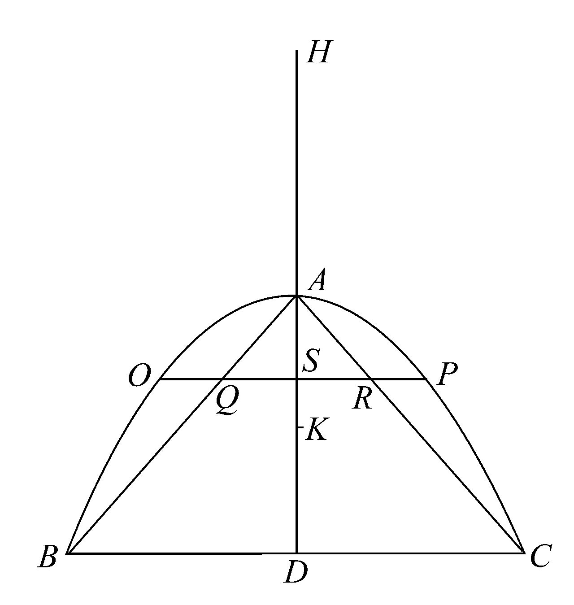
现在，若经过OP作与AD重直的平面，则此平面截旋转抛物体和圆锥所得的截面分别为以OP、QR为直径的圆．
因此应有
HA：AS=直径为OP的圆：直径为QR的圆
=旋转抛物体中的圆：圆锥中的圆．
进一步可知，处于原位置上的旋转抛物体中的圆与以H为重心放置的圆锥中的圆关于A点保持平衡．
同理，由下述平面，即该平面垂直于AD并且经过抛物线内平行于纵坐标方向的任一其他直线，截得的两个相应的圆形截面也有类似的结论．
因此，对于分别组成旋转抛物体被截取的部分和圆锥的所有圆形截面，按照同前一样的方法讨论它们，可知，处于原位置上的旋转抛物面被截取的部分与以H为重心放置的圆锥关于A点保持平衡．
由于A是上述整个系统的重心，其中的一部分即圆锥置于上面所述位置上时，重心在H点，另一部分即旋转抛物体被截取部分的重心位于HA延长线上某点K处，于是有
HA：AK=旋转抛物面被截取部分：圆锥．
但 旋转抛物面被截取部分=
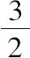
圆锥， ［命题4］因而 HA=
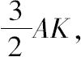
这说明，K分AD的两部分有关系式AK=2KD.
命题6 半球的重心位于其轴［所在的直线上］，并且分该直线段为如下两部分，靠近半球面的部分与余下部分的比为3比5.
设球被经过中心的平面所截，截面为圆ABCD，AC、BD是该圆的两条相互垂直的直径，经过BD作垂直于AC的平面．
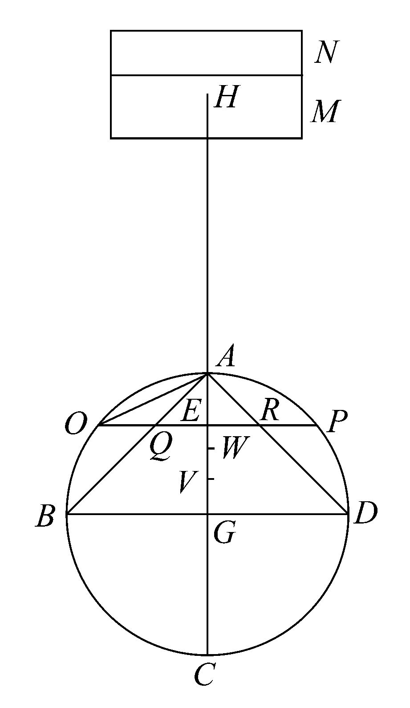
这一平面截球所得截面是以BD为直径的圆．
又设有一圆锥，以后面所说的圆为底，A为顶点．
延长CA至H，使AH等于CA，将HC视为杠杆，A为其中点．
在半圆BAD内，作平行于BD的任一直线OP，与AC交于E，与圆锥的两条母线AB，AD分别交于点Q、R，连接AO.
经过OP作垂直于AC的平面，该平面截半球所得的截面是以OP为直径的圆，截圆锥的截面是以QR为直径的圆．
现在知有
HA：AE=AC：AE
=AO2：AE2
=（OE2+AE2）：AE2
=（OE2+QE2）：QE2
=（直径为OP的圆+直径为QR的圆）：直径为QR的圆．
因此，若以H为重心放置直径为QR的圆，那么，处于原位置上的直径分别为OP、QR的圆与前者关于A点保持平衡．
另外，由于直径分别为OP、QR的两圆的重心，如所示位置重合在一起，是……
［命题到这里出现空白，但按照命题8中解决相应的、但更困难的情形所用的方法，可以容易地完成证明．
上面已经提到，处于原位置上的、直径分别为OP、QR的圆与以H为重心放置的直径为QR的圆关于A点保持平衡，我们从这里继续进行推导．
由经过AG上的点且垂直于AG的其他平面所截得的任何一组其他的圆截面关于A点也有类似的关系．
那么，分别考虑充满半球BAD和圆锥ABD的所有圆，可以发现，处于原位置上的半球BAD和圆锥ABD与以H为重心放置的，与圆锥ABD相同的另一圆锥关于A点保持平衡．
设体积为M+N的圆柱等于圆锥ABD的体积．
于是由以H为重心放置的圆柱M+N与处于原位置上的半球BAD，圆锥ABD保持平衡，可以假定，圆柱的体积为M的部分，以H为重心放置时，与处于原位置上的圆锥ABD（仅其一个）保持平衡；从而以H为重心放置的圆柱的体积为N的部分与处于原位置上的半球（仅其一个）保持平衡．
现设圆锥的重心在点V处，满足AG=4GV，于是由H处的体积M与圆锥ABD平衡可知
M：圆锥=
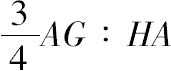
=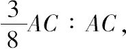
从而得 M=
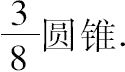
但M+N=圆锥，因此N=
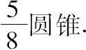
再令半球的重心在W点，它是AG上的某点．
于是由H处的体积N只与半球平衡可知
半球：N=HA：AW.
但半球BAD=2倍的圆锥ABD，
［《论球和圆柱》ⅰ.34和前面的命题2］
又N=
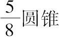
，这已由上面推得，因此有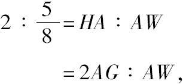
所以AW=
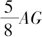
，这表明W以AW：WG=5：3的方式分割AG.］命题7 用同样的方法还可以考察命题：
［球缺］与［同底等高的］圆锥［的体积之比等于球半径与余下球缺的高度之和比上余下球缺的高度］
［这里出现脱漏，但缺掉的部分是作图部分，依据图形它是很容易理解的，显然ABD是所说的球缺，其体积要与同底同高的圆锥进行比较．］
经过MN作垂直于AC的平面，该平面截圆柱，球缺和底为EF的圆锥所得的截面分别是以MN、OP、QR为直径的圆．
用同以前一样的方法［参看命题2］可以证明，如果直径为OP、QR的两圆都移至H处，使H为它们的重心，那么，处于原位置上的直径为MN的圆与前两圆关于A点保持平衡．同理可证，均以AG为高的圆柱、球缺和圆锥被垂直于AC的任一平面所截得的各组圆中，每组中的三个圆都有同样的结论．
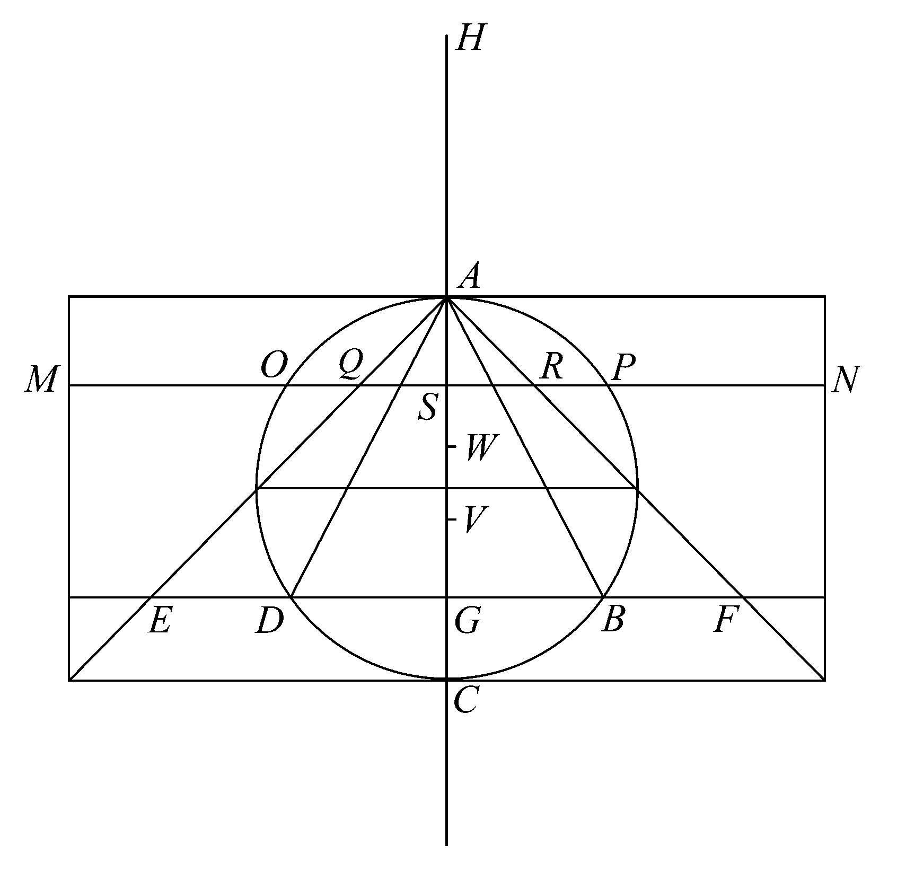
因为所有各组中的三个圆分别组成圆柱、球缺和圆锥，所以可以推知，如果球缺和圆锥都以H为重心放置时，则处于原位置上的圆柱与二者之和关于A点保持平衡．
以点W、V划分AG，使得
AW=WG，AV=3VG.
则可知，W是圆柱的重心，V是圆锥的重心．
现由上述立体处于平衡状态，知有
圆柱：（圆锥AEF+球缺BAD）=HA：AW.
……
［证明的余下部分丢失了，但这可以很容易地做如下的补遗．
现知有
（圆锥AEF+球缺BAD）：圆柱=AW：AC
=AW·AC：AC2.
但 圆柱：圆锥AEF=AC2：
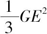
=AC2：
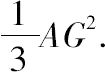
因此，由首末比有
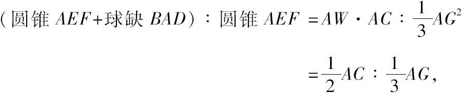
于是有 球缺BAD：圆锥AEF=
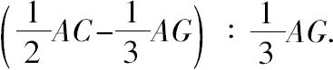
又 圆锥AEF：圆锥ABD=EG2：DG2
=AG2：AG·GC
=AG：GC
=
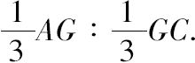
故由首末比得
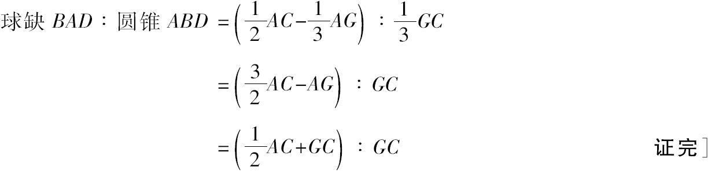
命题8 ［有关命题内容的阐述、假设以及有关作图的话都缺掉了．
然而，由命题9可以得知该命题的内容，其内容，除了不可能谈及“任一球缺”外，和命题9一定是相同的，因此可以推测，该命题仅是关于一类球缺的论述，即或者是比半球大的球缺或者是比半球小的球缺．
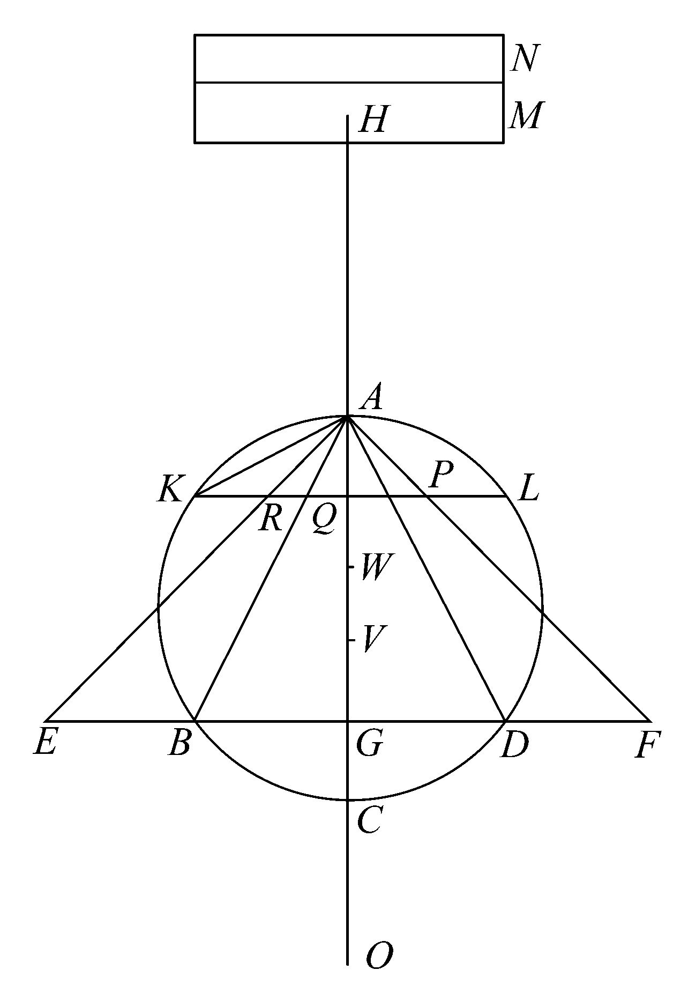
海伯格（Heiberg）的图形对应的是比半球大的情形、所考察的球缺自然应是图中的球缺BAD，作图的开始部分和作图由图中所示显然是很清楚的．］
延长CA两端至H、O点，使HA等于AC，CO等于球半径，视HC为杠杆，中点为A.
在截得球缺的平面上作以G为圆心，半径（GE）等于AG的圆，再以该圆为底、A为顶点作一圆锥，AE、AF为该圆锥的母线．
过AG上的任一点Q作KL平行于EF，与球缺交于点K、L，与AE、AF分别交于点R、P.连接AK.
现知 HA：AQ=CA：AQ
=AK2：AQ2
=（KQ2+QA2）：QA2
=（KQ2+PQ2）：PQ2
=（直径为KL的圆+直径为PR的圆）：直径为PR的圆．
设有一圆，与直径为PR的圆相等，以H为重心将其放置，于是可知，处于原位置上的直径为KL、PR的圆与以H为重心放置的、直径等于PR的上述圆关于A点保持平衡．
同理，对于由垂直于AG的任一其他平面所截得的相应的圆截面也有类似的结论．
因此，考虑分别组成球缺ABD和圆锥AEF的所有圆截面，可以发现，处于原位置上的球缺ABD和圆锥AEF与假设以H为重心放置时的圆锥AEF保持平衡．
设体积为M+N的圆柱等于以A为顶点，以EF为直径的圆作底的圆锥的体积．
在V点划分AG，使得AG=4VG，则V是圆锥AEF的重心，“这一点以前已经证明过了[10]．”
设圆柱M+N被垂直于轴的平面所截，使得（仅）圆柱M，当以H为重心放置时，与圆锥AEF平衡．
因为悬挂于H处的圆柱M+N与处于原位置上的球缺ABD和圆锥AEF保持平衡，而M，也置于H点，与处于原位置上的圆锥AEF保持平衡，所以可以推知，置于H处的N与处于原位置上的球缺ABD保持平衡．
另外，球缺ABD：圆锥ABD=OG：GC，
“这已被证明”［参看《论球和圆柱》ii.2的推论，亦即前面的命题7］，
又 圆锥ABD：圆锥AEF=直径为BD的圆：直径为EF的圆
=BD2：Ef2
=BG2：GE2
=CG·GA：GA2
=CG：GA，
于是由首末比有
球缺ABD：圆锥AEF=OG：GA.
在AG上取点W，使得
AW：WG=（GA+4GC）：（GA+2GC），
其反比为
GW：WA=（2GC+GA）：（4GC+GA）.
由合比得
GA：AW=（6GC+2GA）：（4GC+GA）.
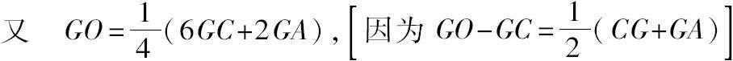
并且 CV=
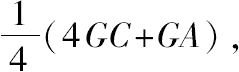
因此 GA：AW=OG：CV，
交换内项，并求反比得
OG：GA=CV：WA.
所以由上面的结论应有
球缺ABD：圆锥AEF=CV：WA.
现在由重心在H点的圆柱M与重心在V点的圆锥AEF关于A点保持平衡，可知
圆锥AEF：圆柱M=HA：AV
=CA：AV，
又圆锥AEF=圆柱M+N，由分比和反比可得
圆柱M：圆柱N=AV：CV.
因此由合比又得
圆锥AEF：圆柱N=CA：CV[11]
=HA：CV.
但已证得
球缺ABD：圆锥AEF=CV：WA，
所以由首末比可得
球缺ABD：圆柱N=HA：AW.
上面已经证得，置于H处的圆柱N与处于原位置上的球缺ABD关于A点保持平衡，因此由H是圆柱N的重心知，W是球缺ABD的重心．
命题9 依然用同一方法可以考察定理．
任一球缺的重心位于其轴所在的直线上，并且分该直线为如下两部分，靠近球缺顶点的部分与余下部分之比等于球缺的轴与4倍的余下球缺的轴之和比上球缺的轴与2倍的余下球缺的轴之和．
［由于该定理论述的是“任一球缺”，而且结论和前一命题相同，因此可以推断，命题8讨论的一定只是某一种球缺，或者比半球大（如海伯格关于命题8的图形所示）或者比半球小，现在的命题就两种情形进行了证明．但无论如何，这只需在图形上作一微小变化．］
命题10 按照这一方法还可以考察如下定理．
［钝角劈锥曲面（即旋转双曲体）的一部分和该部分立体］同底［等高的圆锥的体积之比等于该部分立体的轴与3倍的］“附加轴”（即通过双曲体的轴的双曲线截面的横截轴之半，亦即在该部分立体图形的顶点和包络圆锥的顶点之间的距离）之和比上该部分立体图形的轴与2倍的“附加轴”之和[12]．
［这是在《论劈锥曲面体与旋转椭圆体》的命题25中已经得到证明的定理］，“另外还有许多其他的定理，因为通过前述的例子，这种方法已经很清楚了，所以我不再讨论它们，以便现在可以着手进行上面提到的定理的证明．”
命题11 如果一圆柱内接于底为正方形的直棱柱，其中圆柱的两底位于两相对的正方形面上，圆柱面与其余的四个矩形面相切，通过圆柱的一底圆的圆心与另一底圆相切的正方形的一边作一平面，则由该平面所截圆柱部分图形的体积是整个棱柱的1/6.
“这一命题可用力学方法加以考察，在我能够清楚地表达它之后，就将从几何角度着手其证明．”
［按照力学方法所作的考察包含在11、12两个命题里，命题13给出另一种解法，尽管这种解法没有涉及力学知识，但它仍具有阿基米德所谓的无说服力这一特性，因为其中假设了主体实际上是由平行的平面截面组成，以及辅助抛物线实际上是由包含在其内部的平行直线组成的．命题14增加了确定性的几何证明．］
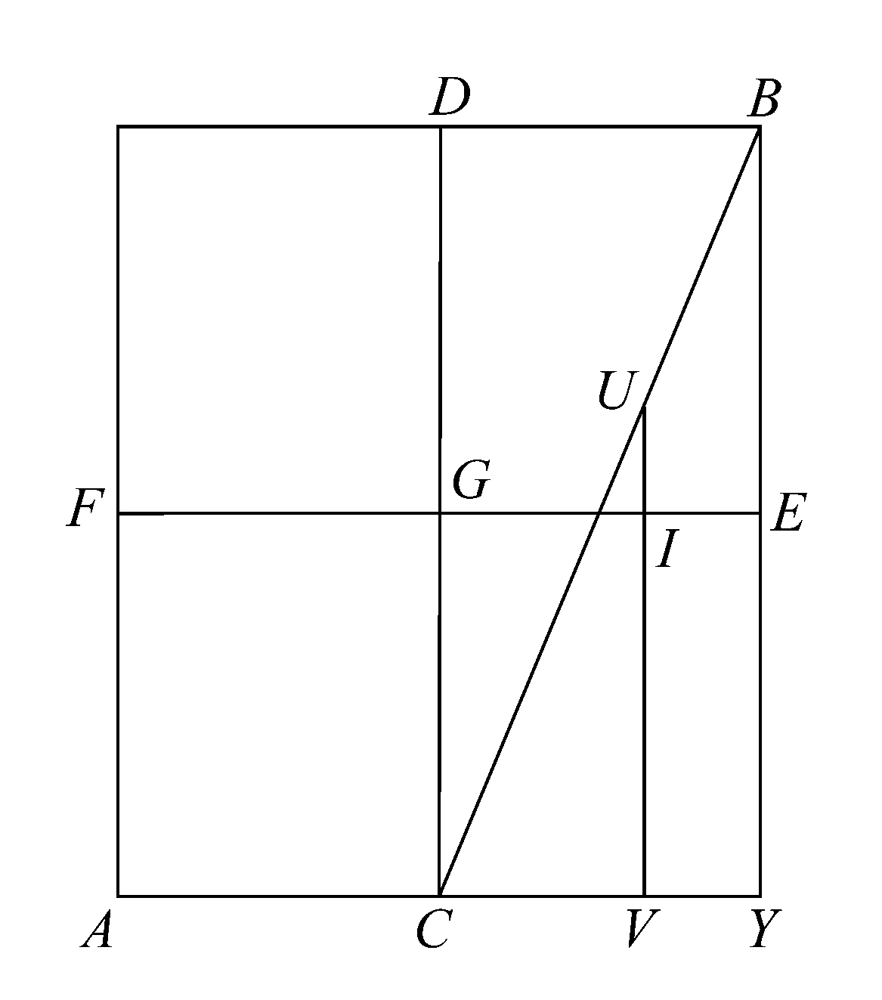
如下所述，设有一直棱柱，在其内部内接一圆柱．
设棱柱被一平面所截，该平面经过棱柱和圆柱的公共轴且与截得圆柱的一部分［以下简称部分圆柱］的平面垂直，设得到的截面为矩形AB，又它与截得部分圆柱的平面（该平面垂直于平面AB）的交线是直线BC.
设CD为棱柱和圆柱的公共轴，EF垂直平分它，经过EF作垂直于CD的平面，该平面截棱柱所得的截面为正方形，截圆柱所得截面为圆．
设MN为截得的正方形截面，OPQR为所截得的圆，圆与正方形各边切于点O、P、Q、R［第一个图形中的点F、E分别和点O、Q重合］．令H为圆心．
设KL是经过EF垂直于圆柱的轴的平面与截得部分圆柱的平面的交线，又KL被OHQ平分［且经过HQ的中点．］
作圆的任一条弦，比如ST，使其与HQ垂直且交点为W，再过ST作垂直于OQ的平面，并于圆OPQR所在平面的两侧将其扩展．
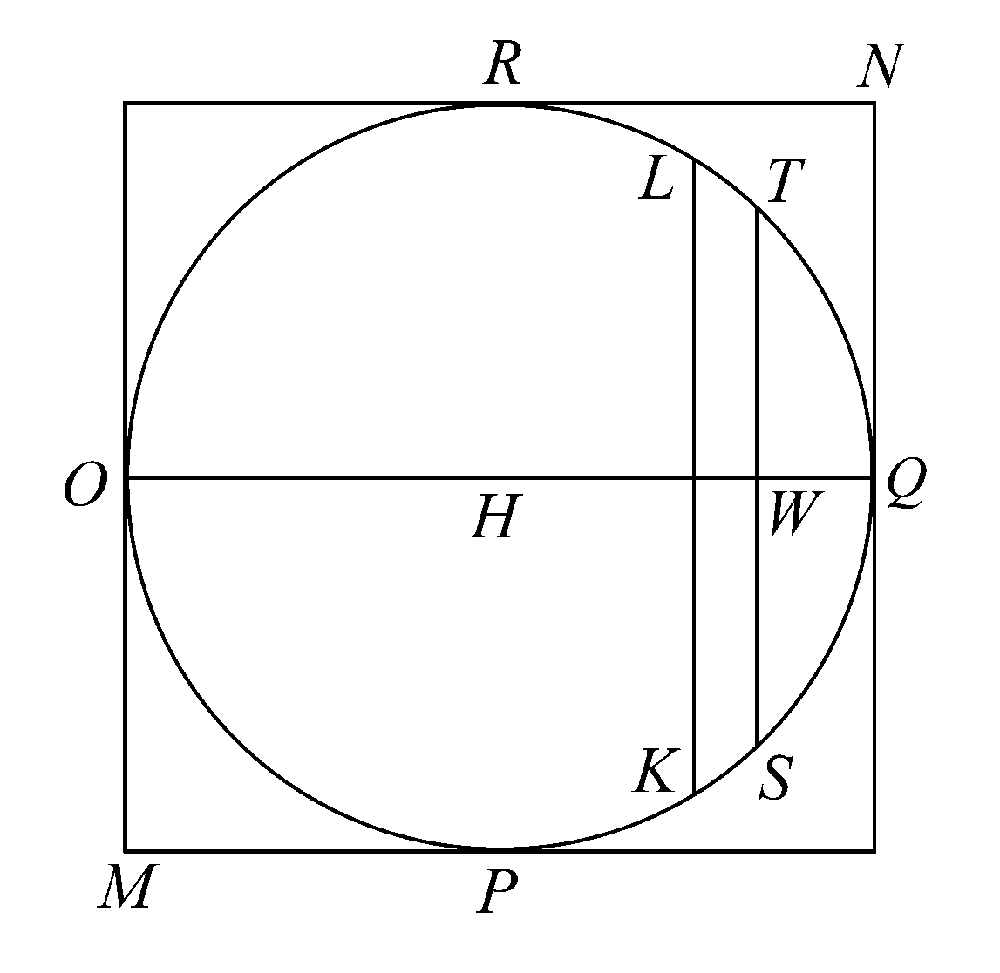
以半圆PQR为中截面、棱柱轴为高的半圆柱被该平面所截，截面为矩形，它的一边等于ST，另一边为圆锥的母线，同时所截得的部分圆柱也被该平面所截，截面也为一矩形，其一边等于ST，另一边等于且平行于（第一个图中的）UV.
UV平行于BY，并且沿矩形DE的边EG方向，截得等于QW的一段EI.
现由EC为矩形、VI平行于GC得
EG：GI=YC：CV
=BY：UV
=位于半圆柱中的矩形：位于部分圆柱中的矩形．
又 EG=HQ，
GI=HW，
QH=OH，
所以OH：HW=位于半圆柱中的矩形：位于部分圆柱中的矩形．
假设将位于部分圆柱中的矩形移至O处，使O为其重心，又假设OQ为杠杆，H为其中点．
于是由W是位于半圆柱中的矩形的重心及上面所述可推知，当部分圆柱中的矩形以O为重心放置时，处于原位置上且重心为W的半圆柱中的矩形与前者关于H保持平衡．
同理，由如下所述的任一平面，即该平面垂直于OQ并且经过半圆PQR中垂直于OQ的任一其他弦，截得的其他矩形截面有类似的结论．
如果考虑分别组成半圆柱和部分圆柱的所有矩形，则可推知，当所截得的部分圆柱以O为重心放置时，处于原位置上的半圆柱与前者关于H保持平衡．
命题12 将垂直于轴的正方形MN连同圆OPQR和它的直径OQ、PR单独画出．
连接HG、HM，经过这两条直线分别作两平面，使其与圆所在的平面相垂直，并于圆所在平面的两侧扩展它们．
这时可得以三角形GHM为截面、高等于圆柱轴的棱柱，该棱柱的体积是最初外切于圆柱的棱柱体积的1/4.
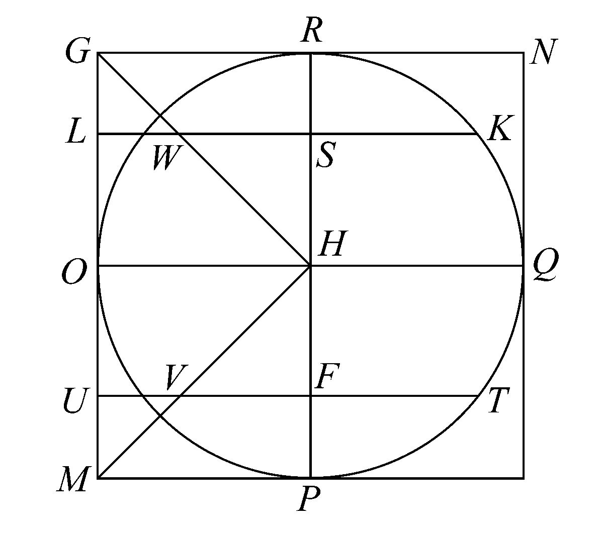
作平行于OQ且与其等距离的直线LK、UT，与圆分别交于点K、T，与RP交于点S、F，与GH、HM交于点W、V.
过LK、UT作垂直于PR的平面，并于圆所在平面的两侧扩展它们，这两个平面在半圆柱PQR和棱柱GHM中产生四个平行四边形截面，它们的高等于圆柱的轴，另一边分别等于KS、TF、LW、UV.…………
………………………………………………
［证明的余下部分是缺掉的，但是，如塞乌滕所说[13]，上面的叙述清楚地表明了所得到的结论以及得到这一结论所用的方法．
阿基米德想要证明分别处于原位置上的半圆柱PQR和棱柱GHM关于定点H保持平衡．
他必须首先证明分别处于原位置上的微元（1）边=KS的矩形和（2）边=LW的矩形关于S保持平衡，也就是说，要先证明分别处于原位置上的直线SK和LW关于S保持平衡．
现知 （圆OPQR的半径）2=SK2+SH2，
即 SL2=SK2+SW2.
因此 LS2-SW2=SK2，
从而 （LS+SW）·LW=SK2.
由此得
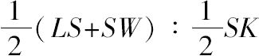
=SK：LW.又
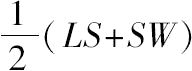
是LW的重心与S点的距离，而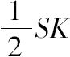
是SK的重心与S点的距离．因而，分别处于原位置上的SK和LW关于S点保持平衡．
同理，对其他相应的矩形也有类似的结论．
考虑分别位于半圆柱和棱柱中的所有矩形微元，可以发现，分别处于原位置上的半圆柱PQR和棱柱GHM关于H点保持平衡．
从这一结果和命题11的结论，可立刻推出由圆柱上截得的部分圆柱的体积．因为命题11表明，以O为重心放置的部分圆柱与处于原位置上的半圆柱（关于H）保持平衡，根据命题12，在半圆柱所在的位置上，可以用棱柱GHM代替半圆柱，即相对于RP将棱柱GHM向相反方向旋转．如此放置的棱柱的重心位于HQ上的某点处（比如说Z点），满足HZ=
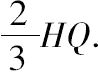
因此，假设该棱柱集于其重心处，则有
部分圆柱：该棱柱=
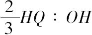
=2：3.
故 部分圆柱=
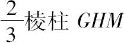
=
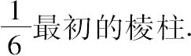
注记 这一命题同时也解决了求半圆柱即半圆的重心问题．
因为处于原位置上的三角形GHM与同样处于原位置上的半圆PQR关于H点保持平衡．
于是，若设HQ上的点X为半圆的重心，则有
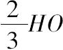
·（△GHM）/=HX·（半圆PQR），即
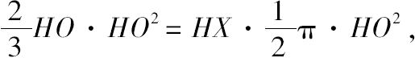
亦即 HX=
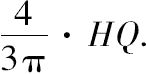
］命题13 设有一底为正方形的直棱柱，其中一底为ABCD，在棱柱里内接一圆柱，它的底为圆EFGH，与正方形ABCD的各边切于点E、F、G、H.
经过圆心和与ABCD相对的另一正方形底面中对应于CD的边作一平面α，这将截得一棱柱∑，其体积是原棱柱的1/4，它由三个平行四边形和两个三角形组成，其中的两个三角形形成两相对的底面．
在半圆EFG内作以FK为轴且经过E、G两点的抛物线，再作MN平行于KF，交GE于点M、抛物线于点L、半圆于点O、CD于点N.
于是有 MN·NL=NF2，
“这是显然的”．［参看阿波罗尼奥斯的《圆锥曲线论》i.1］［参变量MN显然等于GK或KF.］
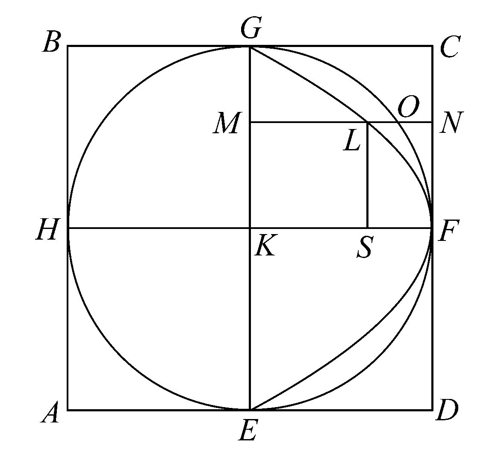
从而 MN：NL=GK2：LS2.
过MN作垂直于EG的平面，由此可得截面（1）位于从整个棱柱上截得的棱柱∑中的直角三角形，它的底边是MN，竖直边于N点垂直于平面ABCD且等于圆柱的轴，斜边在截圆柱的平面α上，（2）位于所截得的部分圆柱中的直角三角形，它的底边是MO，竖直边是于O点垂直于平面KN的部分圆柱的母线，斜边是…………
………………………………………………
［这里出现脱漏，可作如下填补．
因为 MN：NL=GK2：LS2
=MN2：LS2，
所以应有 MN：ML=MN2：（MN2-LS2）
=MN2：（MN2-MK2）
=MN2：MO2.
但位于（1）棱柱∑中的三角形与位于（2）部分圆柱中的三角形的面积之比为MN2：MO2．
因而
棱柱∑中的△：部分圆柱中的△
=MN：ML
=矩形DG中的直线：抛物线中的直线．
现在考虑分别在棱柱∑，部分圆柱，矩形DG和抛物线EFG中的所有相应的微元，］
应有
棱柱∑中的所有△：部分圆柱中的所有△
=矩形DG中的所有直线：抛物线和EG间的所有直线．
而棱柱∑由含于其内的三角形组成，［部分圆柱由含于其内的三角形组成］，矩形DG由其内平行于KF的直线组成，抛物线弓形由截于其周线和EG间且平行于KF的直线组成，于是有
棱柱∑：部分圆柱=矩形GD：抛物线弓形EFG，
又 矩形GD=
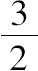
抛物线弓形EFG，“这在我早期的论文里已经证明了．”
［《求抛物线弓形的面积》］
因此 棱柱∑=部分圆柱．
如果以2表示部分圆柱的体积，则棱柱∑的体积为3，最初的外切于圆柱的棱柱体积是12（该棱柱体积是前一棱柱的4倍）.
故部分圆柱=
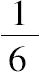
最初的棱柱．证完
［上述命题和下一个命题特别有趣之处在于，抛物线是一条辅助曲线，引进它的目的只是为了把求积问题转化为已知的抛物线求积问题．］
命题14 设有一底为正方形的直棱柱，［其中内接一圆柱，圆柱的一个底位于正方形ABCD上并与各边切于点E、F、G、H.又圆柱被一平面所截，该平面α经过EG和与ABCD相对的正方形底面中对应于CD的边．］
该平面α从上述棱柱截得又一棱柱∑，从圆柱截得其一部分．
可以证明，该平面所截得的圆柱的一部分［以下简称部分圆柱］的体积是原棱柱的.
但必须先证明，可使立体图形内接和外接于部分圆柱，这样的立体图形由高相等、底为相似三角形的棱柱组成，并且满足外接图形与内接图形之差小于任何指定的量……
已经证明
棱柱∑＜
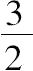
内接于部分圆柱的图形．现在
棱柱∑：内接图形=矩形DG：内接于抛物线弓形的所有矩形，
所以 矩形DG＜抛物线弓形中的所有矩形，
这是不可能的，因为“别处已经证明”矩形DG的面积是抛物线弓形的.
因此……不是更大的．
…………………………………………………………………
又 组成棱柱∑的所有棱柱：组成外接图形的所有棱柱
=组成矩形DG的所有矩形：组成抛物线弓形的外接图形的所有矩形，
于是有
棱柱∑：部分圆柱的外接图形=矩形DG：抛物线弓形的外接图形．
但由平面α截得的棱柱∑的体积＞外接于部分圆柱的立体图形的……
……………………………………………………………
［在几何证明的论述中有几处大的间断，但其中所用的证明方法即穷竭法及其运用于此处和其他地方时所具有的相似性是很清楚的．第一处间断表明由棱柱组成的立体图形分别外接和内接于部分圆柱．这些棱柱的底面是相互平行的三角形，它们垂直于命题13的图形中所示的GE，并把GE分成任意小的等份，这样的三角形所在的平面截部分圆柱所得的三角形截面是内接和外接直棱柱的公共底面．在由截得部分圆柱的平面α截得的、立于GD上的棱柱∑中，这些平面也截得一些小棱柱．
那些三角形所在的平行平面分GE所成的份数要足够大，以保证外接图形与内接图形之差小于所指定的微小量．
证明的第二部分由假设部分圆柱的体积＞棱柱∑体积的2/3开始，通过利用辅助抛物线及命题13中用过的比例式
MN：ML=MN2：MO2，
这一假设被证明是不成立的．
缺掉部分的证明可填补如下[14]．
附图中表示出（1）外接于部分圆柱的第一个小棱柱，（2）纵标线OM附近的两个小棱柱，左边一个是外接的，右边一个（与左边一个体积相等）是内接的，（3）相应于上述小棱柱是棱柱∑（CC'GEDD'）的一部分小棱柱，其中棱柱∑的体积是原棱柱的1/4.
第二个图形中表示出外接和内接于辅助抛物线的小矩形，这些小矩形恰好对应于第一个图形中的外接和内接小棱柱（在两图形中，GM的长度是相同的，小矩形的宽度与小棱柱的高度相同），此外，形成矩形GD的一部分的相应的小矩形也被类似地表示出来．
为方便起见，假定将GE划分成偶数等份，以使GK含有其中的整数份数．
出于简洁性，以OM为棱的两个小棱柱，其中每一个都称为“小棱柱（O）”；以MNN'为公共底面的小棱柱，每一个都称为“小棱柱（N）.”类似地，第二个图形中有关辅助抛物线的相应元素可相应地缩记为“小矩形（L）”和“小矩形（N）”．
现在容易看出，所有外接棱柱组成的图形与所有内接棱柱组成的图形之差为紧接FK的最后一个外接棱柱的2倍，即“小棱柱（N）”的2倍，由于这个小棱柱的高度，通过将GK划分成足够小的份，可任意小，因此可知，可作由小棱柱组成的内接和外接立体图形，使它们的差小于任一指定的立体图形．
（1）假设
部分圆柱＞棱柱∑，
即 棱柱∑＜部分圆柱．
不妨设 棱柱∑=部分圆柱-X，
作由小棱柱组成的外接和内接图形，使得
外接图形-内接图形＜X，
则 内接图形＞（外接图形-X）
进一步 ＞（部分圆柱-X）.
于是应有
棱柱∑＜内接图形．
现在考虑分别位于棱柱∑和内接图形中的小棱柱，有
小棱柱（N）：小棱柱（O）=MN2：MO2
=MN：ML ［同命题13］
=小矩形（N）：小矩形（L）.
由此可推知
所有小棱柱（N）之和：所有小棱柱（O）之和
=所有小矩形（N）之和：所有小矩形（L）之和．
（的确，第一项里的小棱柱和第三项里的小矩形分别比第二项和第四项多两个，不过这没有关系，因为以公因子比如n/（n-2）乘第一项和第三项并不影响上面的比例式，参看本论文的序言结尾处引自《论劈锥曲面体与旋转椭圆体》中的命题．）
从而
棱柱∑：内接于部分圆柱的图形
=矩形GD：内接于抛物线的图形．
但上面已证明
棱柱∑＜内接于部分圆柱的图形，
因此 矩形GD＜内接于抛物线的图形，
更有
矩形GD＜3/2抛物线弓形，
这是不可能的，因为
矩形GD=抛物线弓形，
故
部分圆柱不大于棱柱∑．
（2）第二处间断一定以推翻另一种可能的假设开始，即假设部分圆柱的体积＜棱柱∑体积的.
此时的假设也就是
棱柱∑＞部分圆柱，
作由小棱柱组成的外接和内接图形，使得
棱柱∑＞外接于部分圆柱的图形．
现在考虑分别位于所截得的棱柱∑和外接图形中的小棱柱，同样按照前面的推理，可得
棱柱∑：外接于部分圆柱的图形
=矩形GD：外接于抛物线的图形，
由此可推知
矩形GD＞外接于抛物线的图形，
进一步有
矩形GD＞抛物线弓形，
这是不可能的，因为
矩形GD=抛物线弓形．
因此
部分圆柱不小于棱柱∑．
又已证明它们之间的不大于关系，所以
部分圆柱=棱柱∑
=最初的棱柱．］
命题15 ［该命题已经失传了，这篇论文的序言里曾提到两个特殊的问题，它是对其中的第二个问题所做的力学考察，即用力学方法考察两圆柱间所含图形的体积，其中每个圆柱都内接于同一个立方体，每个圆柱的相对的底面位于立方体的两个相对的面上，并且其表面与立方体的其余四个面相切．
塞乌滕已经说明在这种情况下如何应用力学方法[15]．
附图中的VWYX是立方体被一平面所截而得的一个截面，该平面（即纸面）经过内接于立方体的一个圆柱的轴BD且平行于立方体两相对的面．
该平面截另一内接圆柱所得的截面为圆ABCD，其中该圆柱的轴垂直于纸面，扩展截面VWYX所在平面的两侧，使左、右两侧延伸的距离等于圆半径或立方体边长之半．
AC是圆ABCD的直径，且与BD垂直．
连接AB、AD并延长，与圆ABCD在C点的切线交于E、F.
则 EC=CF=CA.
设LG为圆ABCD在A点的切线，作矩形EFGL.
经过BD垂直于AK的平面截立方体得一截面，从A点到该截面的四个角作直线，这些直线，如果被延长，将与下述平面交于四点，即立方体与A相对的那个面所在的平面，所得的四个交点在该平面上形成正方形的四个角，正方形的边长等于EF或立方体边长的两倍，于是以A为顶点，以后面所述正方形为底可得一棱锥．
作为该棱锥同底同高的棱柱（平行六面体）.
在平行四边形LF内作平行于EF的任一直线MN，再过MN作垂直于AC的平面．
该平面截出
（1）包含在两圆柱之间的立体得边长等于OP的正方形，
（2）棱柱得边长等于MN的正方形，
（3）棱锥得边长等于QR的正方形．
延长CA至H，使HA等于AC，视HC为杠杆．
同命题2一样，由于MS=AC，QS=AS，则有
MS·SQ=CA·AS
=AO2
=OS2+SQ2.
同样也有
HA：AS=CA：AS
=MS：SQ
=MS2：MS·SQ
=MS2：（OS2+SQ2），
这是上面得出的结果，
=MN2：（OP2+QR2）
=边长等于MN的正方形：（边长等于OP的正方形+边长等于QR的正方形）.
因此，处于原位置上的边长等于MN的正方形与以H为重心放置的边长分别等于OP、QR的正方形关于A点保持平衡．
按照同样的方式继续考察由垂直于AC的其他平面所产生的正方形截面，最后可以证明，处于原位置上的棱柱与均以H为重心放置的棱锥和包含在两圆柱之间的立体关于A点保持平衡．
棱柱的重心在K点．
于是有 HA：AK=棱柱：（立体+棱锥），
即 2：1=棱柱：（立体+棱柱）．
从而 2立体+棱柱=棱柱．
所以得
包含在圆柱间的立体=棱柱
=立方体．
证完
毫无疑问，阿基米德接下来是用穷竭法进行严格的几何证明，并且完成了这一证明．
如C.Juel教授（即上文中提到的塞乌滕）所考察的那样，该命题中的立体是由8个前面的命题中所述类型的圆柱组成的，然而由于这两个命题被分开叙述，因此，无疑阿基米德对这两个命题的证明是截然不同的．
在这种情况下，AC要被分成许多相等的小份，并且要过这些分点作垂直于AC的平面，这些平面截所求立体和立方体VY所得截面均为正方形，因此，可作所求立体的内接和外接立体图形，它们由小棱柱组成，并且可使它们的差小于任一指定的立体体积，其中那些小棱柱以正方形为底，以分AC所得的各个小段为高．内接和外接图形中以面积为OP2的正方形为底的小棱柱对应于立方体中的一个小棱柱，这个小棱柱的底是以立方体的边长作为边长的正方形，由于这样的两个小棱柱的体积比为OS2：BK2，所以同命题14一样，可引用辅助抛物线并采用与之完全相同的方法完成证明．
[1]这里所说的平行四边形显然为正方形．
[2]即正方形．
[3]此图形我国刘徽（公元263年前后）称为“牟合方盖”．
[4]是单数形式，也许阿基米德把棱锥看作更基本的情形，并由此考虑到圆锥的情形，也可能这里的“图形”指“图形的类型”而言．
[5]参看《求抛物线弓形的面积》的序言．
[6]求圆锥重心的问题在阿基米德现存的著作中未见解决，或许它已经在一个单独的论文中得到解决，如已失传的，也可能存在于一部较大的力学著作中，现存的《论平面图形的平衡》只是其中的一部分．
[7]即阿里斯泰库斯（Aristaeus）和欧几里得的关于圆锥曲线的著作，参看《论劈锥曲面体与旋转椭圆体》的命题3和《求抛物线弓形面积》的命题3中类似的表达．
[8]在希腊语文本中支配的词是，这是一个看上去含糊的，因而很难翻译的词，海伯格的翻译似乎意指“我们将在下面给”或“以后”，但我赞同Th.Reinach的观点（Revue genérale des sciences pures et appliquées，30 November 1907），他认为阿基米德是否以附录的形式又一次完整写出如他所说已经公布的证明（应该在《求抛物线弓形的面积》中公布的）这一点是值得怀疑的．，如果正确的话，显然应该解释为“我们将提供”“给出”或“指出”．
[9]这说明，阿基米德解决球体积问题先于球表面积问题，并由前一问题推断出后一问题的结论，但在《论球和圆柱》卷I里，球表面积问题独立列为一个题目（即命题33），而且在球体积问题即命题34之前．这一事实也说明，希腊几何学家最后在论文中详尽阐述命题时未必遵循发现的顺序．
[10]参看本节命题1的注4.
[11]阿基米德迂回地得到这一结果，实际上该结果利用换比（Convertendo）立刻可得．参看Eucl.v.定义16和x.4.
[12]在原文的最后一行里是“三倍”（）而不是“两倍”，由于在接近最后的几行里有相当大的空白，所以关于旋转双曲面的一部分的重心的定理可能已经脱落了．
[13]见塞乌滕在Bibliotheca MathematicaⅦ3，1906-1907
[14]应该指出，Th.Reinach在一篇论文（“Un Trnitéde Géométrie inédit d'Archiméde”in Revue générale des sciences pures et appliquées，30 Nov.and 15 Dee.1907）的译文中已经对此做了填补，但我更倾向于叙述我本人所作的填补．
[15]见塞乌滕，《数字文库》Ⅶ3，1906-1907.
（朱恩宽 常心怡 兰纪正 王青建 周冬梅 等译 叶彦润 冯汉桥 校 赵生久 绘图）